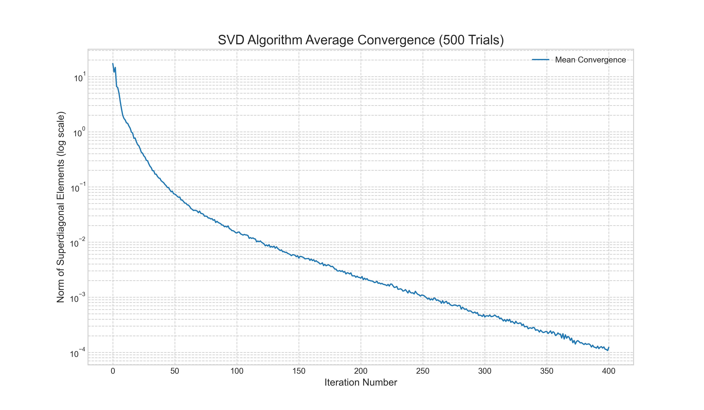
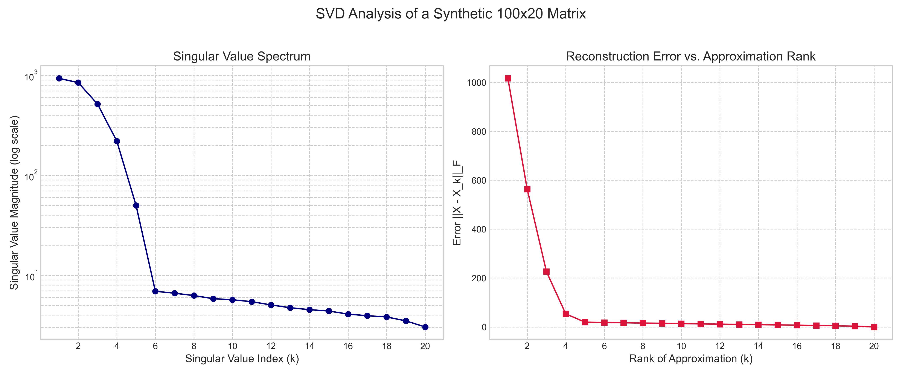
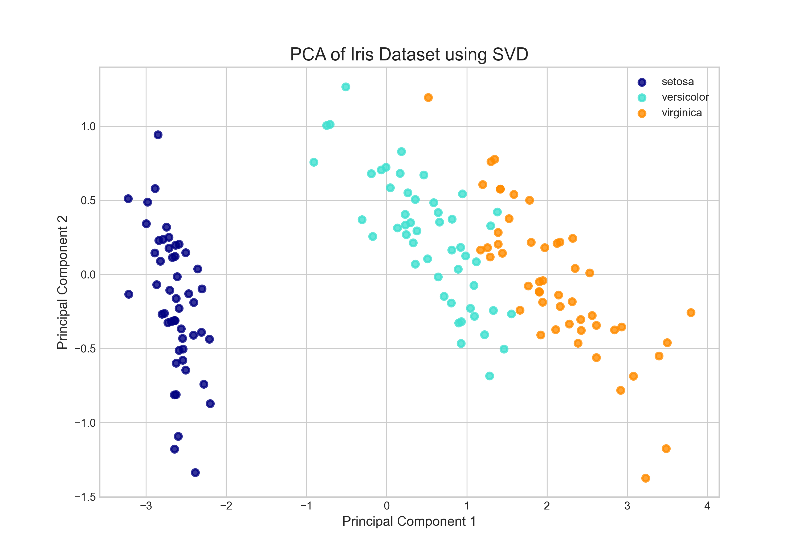

Across our journey through computational matrix theory, we have encountered a hierarchy of tools for solving linear systems. We concluded that the Singular Value Decomposition (SVD) stands as the most robust and insightful factorization, providing a numerically stable solution to the least squares problem and a definitive measure of a matrix's condition number and rank. While its role as a powerful solver is clear, to view the SVD merely through this lens is to miss its profound importance in the broader world of data analysis. The SVD is not just a tool for finding answers; it is a mechanism for understanding and interpreting the very structure of data.
In this article, we will reframe the SVD from a solver to an analytical instrument—the "Swiss Army knife" of matrix decompositions. We will explore how this factorization allows us to peer inside a matrix, identify its most significant components, and discard the rest, all while preserving the essential information. To begin, we will solidify the deep connection between the SVD and the eigenvalue problem, showing that these two concepts are fundamentally intertwined. We will then examine the sophisticated algorithms that compute the SVD in a stable manner before diving into one of its most celebrated applications: the reduction of high-dimensional datasets to their most meaningful features using Principal Component Analysis (PCA). Through these practical examples, we will see how the abstract theory of singular values and vectors translates into powerful techniques for data interpretation.
The SVD's Connection to Eigenvalues
The SVD is deeply connected to the eigenvalue problem, a link that provides both theoretical insight and a first (though numerically flawed) approach to its computation. Recall that the SVD of a matrix $\mathbf{A}$ is given by $\mathbf{A} = \mathbf{U}\boldsymbol{\Sigma}\mathbf{V}^T$. If we use this decomposition to construct the symmetric matrix $\mathbf{A}^T\mathbf{A}$, we find:
Since $\mathbf{U}$ is an orthogonal matrix, $\mathbf{U}^T\mathbf{U} = \mathbf{I}$, which simplifies the expression to:
This is precisely the eigendecomposition of the matrix $\mathbf{A}^T\mathbf{A}$. The columns of $\mathbf{V}$ are the eigenvectors of $\mathbf{A}^T\mathbf{A}$, and the diagonal entries of the matrix $(\boldsymbol{\Sigma}^T\boldsymbol{\Sigma})$ are its eigenvalues. Similarly, for $\mathbf{A}\mathbf{A}^T$, we find that its eigenvectors are the columns of $\mathbf{U}$. The singular values of $\mathbf{A}$ (the diagonal entries of $\boldsymbol{\Sigma}$) are therefore the square roots of the non-zero eigenvalues of either $\mathbf{A}^T\mathbf{A}$ or $\mathbf{A}\mathbf{A}^T$.
This relationship provides a clear, albeit naive, algorithm for computing the SVD: we can find the eigenvalues and eigenvectors of $\mathbf{A}^T\mathbf{A}$ to determine $\mathbf{V}$ and $\boldsymbol{\Sigma}$, and then calculate $\mathbf{U}$ from there. While this works in theory, we will see in the next section why this is a numerically unstable approach that is avoided in practice.
Numerical Stability and Computation of the SVD
The theoretical connection to the eigenvalue problem provides a tempting path to computing the SVD. However, the explicit formation of $\mathbf{A}^T\mathbf{A}$ is the exact same numerical pitfall we encountered with the Normal Equations in our study of the least squares problem. This operation squares the condition number of the matrix ($\kappa(\mathbf{A}^T\mathbf{A}) = \kappa(\mathbf{A})^2$), which can lead to a catastrophic loss of precision for ill-conditioned matrices. Any small errors in the original matrix $\mathbf{A}$ are magnified, potentially corrupting the computed eigenvalues and eigenvectors, and by extension, the computed SVD. For a factorization prized for its robustness, this is an unacceptable starting point. Professional numerical libraries like LAPACK, which powers NumPy, therefore use a much more sophisticated and stable two-phase approach that works directly on $\mathbf{A}$ without ever forming $\mathbf{A}^T\mathbf{A}$.
The first step is to reduce the original $m \times n$ matrix $\mathbf{A}$ to an upper bidiagonal form $\mathbf{B}$ using a finite sequence of Householder transformations applied alternately from the left and right. A Householder transformation is an orthogonal reflection matrix $\mathbf{P}=\mathbf{I}−2\mathbf{v}\mathbf{v}^T/\|\mathbf{v}\|^2$ that can be used to zero out selected elements of a vector. The process for an $m \times n$ matrix $\mathbf{A}$ (assuming $m \geq n$) proceeds as follows:
- A left-sided Householder transformation $\mathbf{P}_1$ is constructed to zero out all elements below the diagonal in the first column of $\mathbf{A}$. The matrix becomes $\mathbf{P}_1\mathbf{A}$.
- A right-sided Householder transformation $\mathbf{Q}_1$ is then constructed to zero out the elements in the first row from the third element onwards ($a_{1,3}, \ldots, a_{1,n}$). Applying this gives $\mathbf{P}_1\mathbf{A}\mathbf{Q}_1$. This operation does not disturb the zeros already created in the first column.
- This process is repeated for the subsequent columns and rows. For the second column, a left-sided transformation zeros the elements below the second diagonal entry. For the second row, a right-sided transformation zeros elements to the right of the second superdiagonal entry.
This continues until the matrix is in bidiagonal form. Crucially, each Householder matrix is orthogonal. Applying an orthogonal matrix to $\mathbf{A}$ does not change the eigenvalues of $\mathbf{A}^T\mathbf{A}$, and therefore does not change the singular values of $\mathbf{A}$. We are thus left with a much simpler problem: finding the SVD of the bidiagonal matrix $\mathbf{B}$, which has the same singular values as $\mathbf{A}$. The implementation details of this phase are shown in the following code snippets.
# Phase 1: Bidiagonalization.
def bidiagonalize(A):
"""
Reduces a matrix A to upper bidiagonal form B using Householder reflections.
This function demonstrates Phase 1 of the SVD algorithm.
"""
def householder_vector(x):
"""Creates a Householder vector 'v' from a vector 'x'."""
v = x.copy()
# To maintain numerical stability, we use the sign of x[0]
v[0] += np.sign(x[0]) * np.linalg.norm(x)
norm_v = np.linalg.norm(v)
if norm_v > 1e-12:
v /= norm_v
return v
m, n = A.shape
B = A.copy().astype(float)
for i in range(min(m, n)):
# Apply a left-sided Householder reflection to zero the i-th column
# elements below the diagonal.
col_slice = B[i:, i]
v_col = householder_vector(col_slice)
B[i:, i:] -= 2 * np.outer(v_col, v_col.T @ B[i:, i:])
# Apply a right-sided Householder reflection to zero the i-th row
# elements past the superdiagonal.
if i < n - 2:
row_slice = B[i, i+1:]
v_row = householder_vector(row_slice)
B[:, i+1:] -= 2 * np.outer(B[:, i+1:] @ v_row, v_row.T)
return B
While the matrix $\mathbf{B}$ is much sparser than $\mathbf{A}$, its singular values are not yet explicit. The second phase is to take this bidiagonal matrix and iteratively drive its superdiagonal elements to zero. This is accomplished using an iterative method that is mathematically equivalent to the QR algorithm, most famously the Golub-Kahan-Reinsch (GKR) algorithm. The GKR algorithm works with implicit shifts, a numerical technique that accelerates convergence without explicitly forming a shifted matrix like $(\mathbf{B}^T\mathbf{B}−\lambda\mathbf{I})$. A single step of the algorithm can be summarized as:
- Choose a Shift: A shift $\lambda$ is chosen, typically from the eigenvalues of the bottom $2 \times 2$ submatrix of $\mathbf{B}^T\mathbf{B}$. This choice determines the convergence rate.
- Implicit QR Step: A sequence of Givens rotations is applied to the bidiagonal matrix $\mathbf{B}$. A Givens rotation is a simple orthogonal transformation that affects only two rows or columns at a time, designed to introduce a single zero. The first rotation is applied to the top of the matrix, introducing an unwanted non-zero element (a "bulge").
- Chase the Bulge: A carefully orchestrated sequence of subsequent Givens rotations is applied from left and right to "chase" this bulge down and off the bidiagonal.
The result of this sequence of rotations is equivalent to performing a full QR decomposition and recombination step on $\mathbf{B}^T\mathbf{B}$, but it is done implicitly and directly on $\mathbf{B}$, preserving numerical stability. This process is repeated until the superdiagonal elements are negligible, at which point the diagonal elements of the resulting matrix are the singular values of $\mathbf{A}$.
# Phase 2: Iterative Diagonalization.
def givens_rotation(a, b):
"""Computes the cosine and sine for a Givens rotation matrix."""
hypot = np.hypot(a, b)
if hypot == 0.0:
return 1.0, 0.0
return a / hypot, -b / hypot
def gkr_step(B_sub):
"""
Performs one implicit QR step (the "bulge-chasing" core of the GKR algorithm).
This function demonstrates the iterative process of Phase 2.
"""
B = B_sub.copy()
n = B.shape[0]
# 1. Choose a shift (e.g., Wilkinson shift from the bottom 2x2 submatrix of B.T @ B)
# to accelerate convergence.
T = B.T @ B
eigenvalues = np.linalg.eigvals(T[n-2:n, n-2:n])
shift = eigenvalues[np.argmin(np.abs(eigenvalues - T[n-1, n-1]))]
# 2. Start the "bulge" with a right-sided rotation at the top of the matrix.
y = B[0, 0]**2 - shift
z = B[0, 0] * B[0, 1]
c, s = givens_rotation(y, z)
G = np.array([[c, -s], [s, c]])
B[:, 0:2] = B[:, 0:2] @ G
# 3. "Chase the bulge" down the bidiagonal.
for k in range(n - 1):
# Apply a left-sided rotation to annihilate the bulge at B[k+1, k].
y, z = B[k, k], B[k+1, k]
c, s = givens_rotation(y, z)
B[k+1, k] = 0.0
G = np.array([[c, s], [-s, c]])
B[k:k+2, :] = G @ B[k:k+2, :]
# This creates a new bulge on the superdiagonal, which we chase
# with a right-sided rotation.
if k < n - 2:
y, z = B[k, k+1], B[k, k+2]
c, s = givens_rotation(y, z)
G = np.array([[c, -s], [s, c]])
B[:, k+1:k+3] = B[:, k+1:k+3] @ G
return B
From a computational complexity perspective, this two-phase approach is highly efficient. For an $m \times n$ matrix with $m \geq n$, the first phase, bidiagonalization, requires approximately $4mn^2−4n^3/3$ floating-point operations (flops). This cost arises from applying approximately $2n$ Householder transformations to shrinking submatrices of $\mathbf{A}$. Summing the costs of these operations gives a complexity of $O(mn^2)$. The second phase, the iterative diagonalization of the resulting bidiagonal matrix, is much faster. A single GKR iteration, which involves a series of Givens rotations, has a linear cost of $O(n)$ flops. Since the algorithm typically requires only a small, constant number of iterations on average for each singular value to converge, finding all $n$ singular values requires approximately $n$ total iterations. This leads to an overall complexity of $O(n^2)$ for this phase. Consequently, the total cost is dominated by the initial bidiagonalization, resulting in an overall complexity of $O(mn^2)$.
A natural question arises from this two-phase structure: why not simply continue applying Householder transformations until the matrix is fully diagonal? The answer lies in the fundamental distinction between direct and iterative methods in numerical algebra. Phase 1, the bidiagonalization, is a direct method. It is guaranteed to terminate in a fixed, predictable number of steps, transforming the dense matrix into a much simpler form. However, completely diagonalizing the matrix is equivalent to finding the roots of a high-degree polynomial, a problem for which no general, finite algebraic solution exists (a result of the Abel-Ruffini theorem). Therefore, any algorithm to find the singular values must, at its core, be iterative. Attempting to use Householder reflections to zero out the superdiagonal elements of the bidiagonal matrix would re-introduce non-zero entries elsewhere, failing to converge. The two-phase strategy is thus a classic divide-and-conquer approach: use an efficient direct method to reduce the problem to its simplest possible finite form, then switch to a rapid iterative method to solve the remaining problem.
To provide a concrete illustration of this efficiency, we performed a numerical experiment of the full two-phase SVD algorithm on 500 randomly generated matrices. Figure 1 shows the average norm of the superdiagonal elements at each iteration. The y-axis, plotted on a logarithmic scale, represents the error, or how far the bidiagonal matrix is from being truly diagonal. The plot clearly demonstrates the algorithm's quick and stable convergence. The error decreases by several orders of magnitude over a few hundred iterations, visually confirming the theoretical efficiency of the iterative QR-based approach on a bidiagonal matrix.

Low-Rank Approximation: The Essence of Data Reduction
Having established a stable method for computing the SVD, we can now explore its most powerful application: data reduction through low-rank approximation. The SVD can be expressed as a sum of rank-one matrices:
where $r$ is the rank of the matrix, $\sigma_i$ are the singular values (sorted in descending order), and $\mathbf{u}_i$ and $\mathbf{v}_i$ are the corresponding columns of $\mathbf{U}$ and $\mathbf{V}$. This form reveals a profound insight: the matrix $\mathbf{A}$ is a weighted sum of simple, rank-one components. The singular values $\sigma_i$ act as the weights, indicating the importance of each component. The components associated with large singular values contribute the most to the overall structure of the matrix, while those with small singular values contribute progressively less.
This structure is the key to approximation. If we want to create a simpler matrix, $\mathbf{A}_k$, that is as close as possible to our original matrix $\mathbf{A}$ but has a lower rank, $k < r$, how should we do it? The Eckart-Young-Mirsky theorem provides the definitive answer. It states that the optimal rank-$k$ approximation of $\mathbf{A}$ (the matrix $\mathbf{A}_k$ that minimizes the error $\|\mathbf{A} - \mathbf{A}_k\|_F$) is found by simply truncating the SVD sum after the first $k$ terms:
Here, $\mathbf{U}_k$ and $\mathbf{V}_k$ contain only the first $k$ columns of the original $\mathbf{U}$ and $\mathbf{V}$, and $\boldsymbol{\Sigma}_k$ is the top-left $k \times k$ block of $\boldsymbol{\Sigma}$. In essence, the SVD gives us a principled way to throw away information. By discarding the components associated with the smallest singular values, we can create a compressed representation of the matrix that preserves its most significant structural features. This principle is the foundation of a vast range of techniques in data science, from signal de-noising and image compression to the dimensionality reduction method we will explore next.
To see this principle in action, we performed an analysis on a synthetic $100 \times 20$ matrix with a known rank of 5, plus some random noise. The results are shown in Figure 2. The left plot, the singular value spectrum, shows that the first 5 singular values are significantly larger than the rest, which quickly decay towards zero. This "elbow" is a clear indicator of the underlying rank-5 structure of the data. The right plot shows the reconstruction error as we increase the rank of our approximation. The error drops dramatically as we add the first 5 components, but then flattens out. This visually confirms the theory: including the components beyond the 5th rank adds very little to the accuracy of our approximation, as they correspond to the small singular values that largely represent noise.

Application: Principal Component Analysis (PCA)
One of the most widespread and powerful applications of the SVD is in Principal Component Analysis (PCA). PCA is a cornerstone of modern data analysis and machine learning, used primarily for dimensionality reduction. The fundamental goal of PCA is to take a high-dimensional dataset and find the most meaningful lower-dimensional view of that data. It seeks to identify the directions of greatest variance—the axes along which the data is most spread out—under the assumption that these directions contain the most important structural information.
Imagine a dataset of $m$ observations, each with $n$ features, which can be represented as an $m \times n$ data matrix $\mathbf{X}$. The first step in PCA is to "center" the data by subtracting the mean of each feature (column) from all of its entries. This results in a new matrix, $\mathbf{X}_c$, where each column has a mean of zero. The core of PCA is then to find the principal components, which are a new set of orthogonal axes that are aligned with the directions of maximum variance in this centered data.
This is where the SVD provides a direct and numerically stable solution. If we compute the SVD of the centered data matrix, $\mathbf{X}_c = \mathbf{U}\boldsymbol{\Sigma}\mathbf{V}^T$, the principal components are the columns of the matrix $\mathbf{V}$. The reason for this lies in the dimensions of the matrices. Our data matrix $\mathbf{X}_c$ is $m \times n$, where $m$ is the number of observations and $n$ is the number of features. The principal components are new axes in the $n$-dimensional feature space. The matrix $\mathbf{V}$ is $n \times n$, and its columns (the right singular vectors) are vectors in this feature space. The first column of $\mathbf{V}$ is the first principal component, the direction of greatest variance. The second column is the second principal component (orthogonal to the first), which captures the next greatest amount of variance, and so on.
The singular values in $\boldsymbol{\Sigma}$ are also directly related to this variance; the square of each singular value, $\sigma_i^2$, is proportional to the amount of variance captured by the corresponding principal component. By projecting the original data onto the first few principal components (the first few columns of $\mathbf{V}$), we can create a low-dimensional representation that preserves the most significant patterns in the data.
To make this concrete, we can apply PCA to the well-known Iris dataset. This dataset consists of 150 observations of iris flowers, each with four features (sepal length, sepal width, petal length, and petal width). The goal is to see if these four-dimensional data points can be visualized in a way that separates the three different species of iris. After centering the data and computing the SVD, we project the data onto the first two principal components. The result is a 2D scatter plot where each point represents a flower. As the plot clearly shows, the data points form distinct clusters corresponding to the three species. The SVD has successfully found a two-dimensional "view" of the data that reveals its underlying structure, a task that would be impossible by looking at the raw four-dimensional data alone.

Conclusion
The Singular Value Decomposition is far more than just another matrix factorization; it is a powerful analytical tool that provides deep insight into the structure of data. Its theoretical connection to the eigendecomposition of $\mathbf{A}^T\mathbf{A}$ provides a conceptual foundation, but its practical power is derived from sophisticated, numerically stable algorithms that avoid the pitfalls of this naive approach. By revealing the fundamental components of a matrix, ordered by their significance, the SVD enables a principled approach to data reduction. As we have seen with Principal Component Analysis, this allows us to take complex, high-dimensional datasets and distill them into lower-dimensional views that reveal hidden patterns and relationships. This ability to find the essential structure in data is what makes the SVD an indispensable tool in modern science, and provides a natural bridge to the more advanced computational techniques we will explore later.